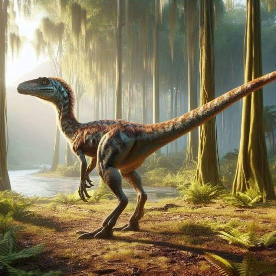
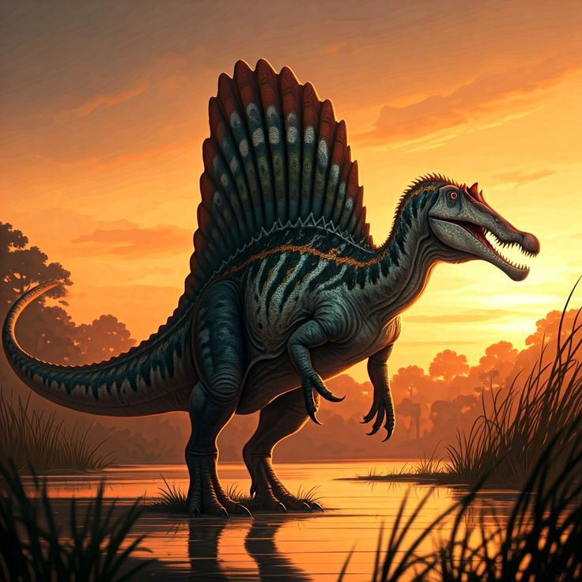
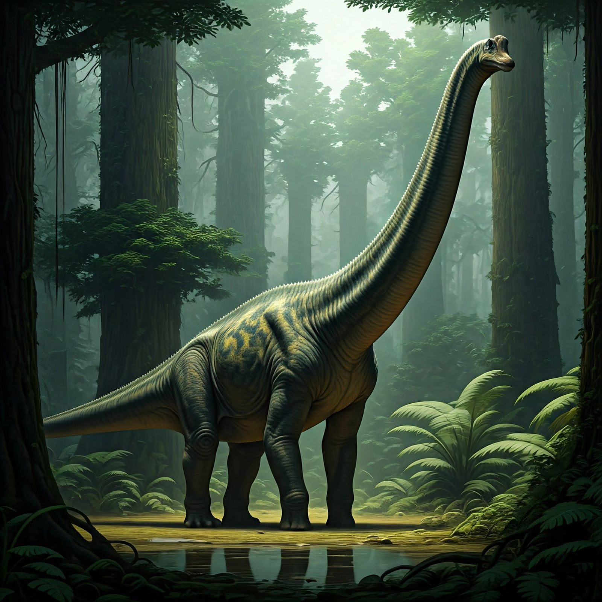
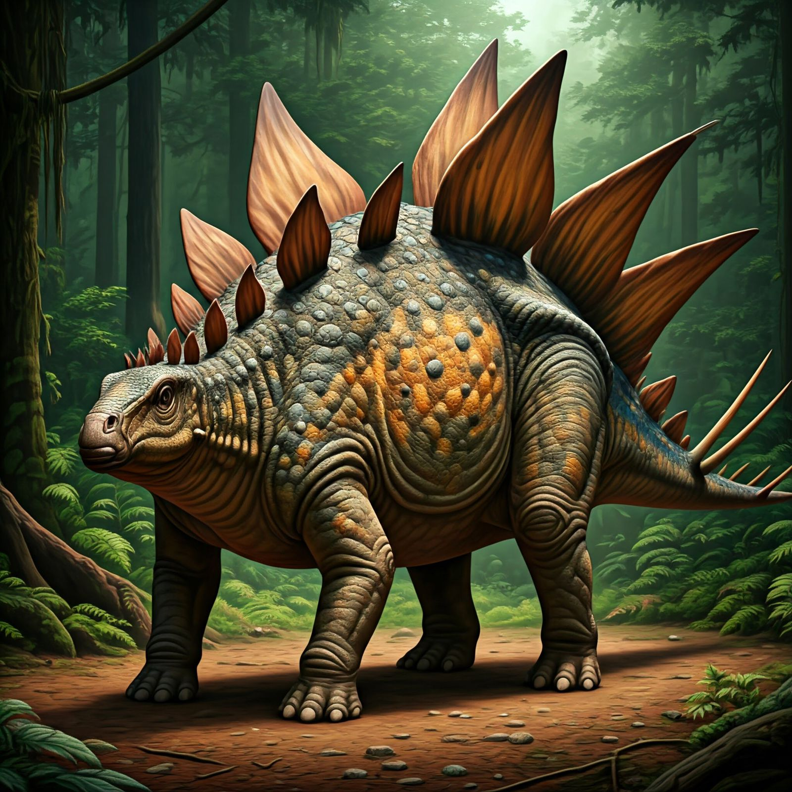
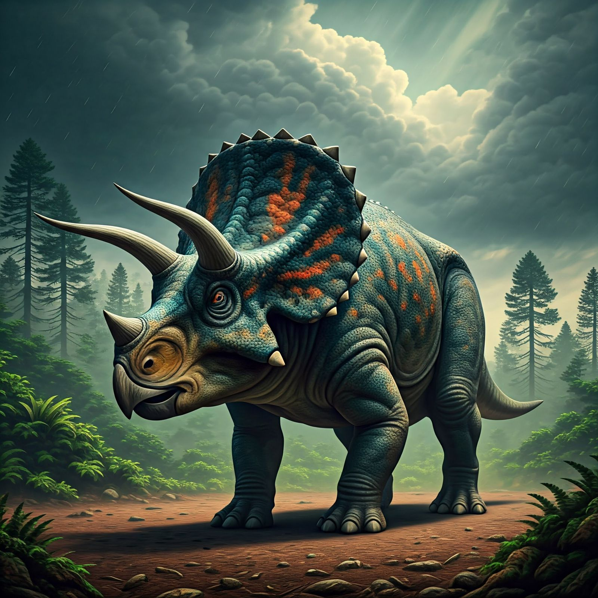
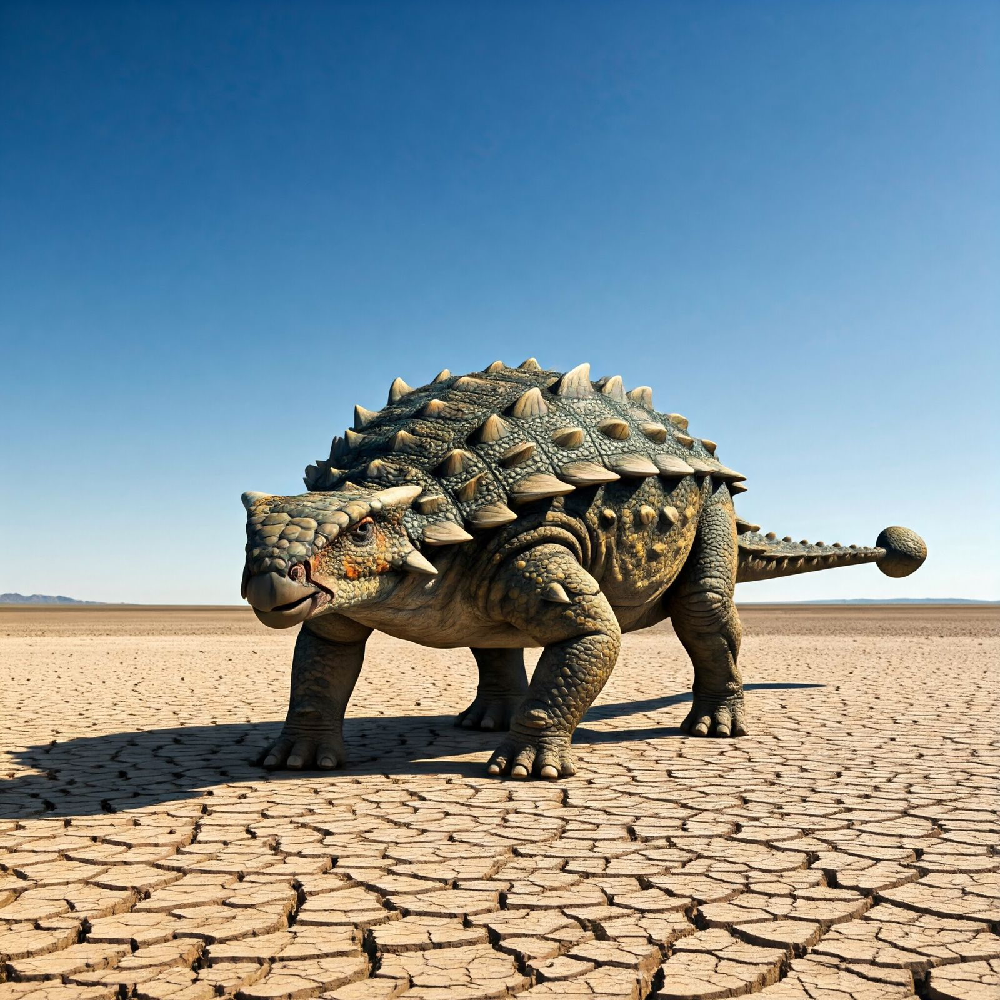
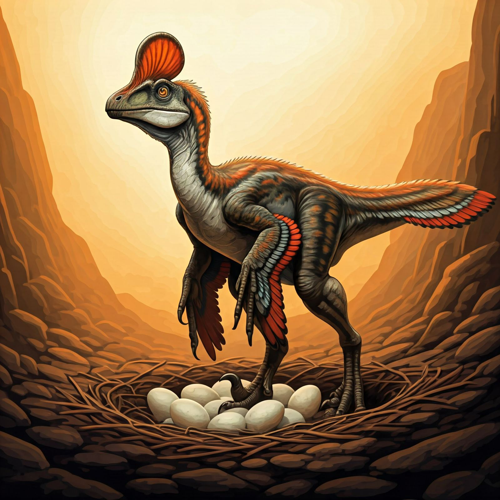
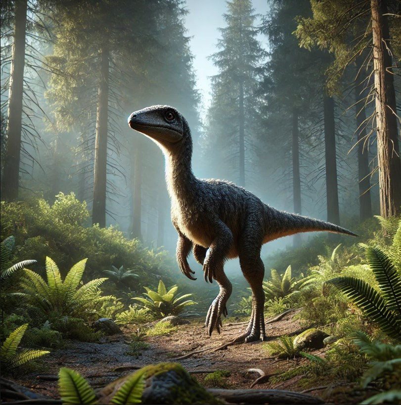
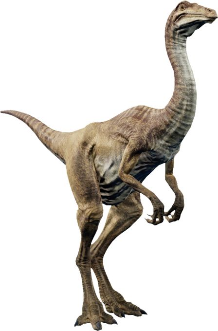

Dinosaurus adalah kelompok reptil prasejarah yang mendominasi kehidupan di Bumi selama Era Mesozoikum, sekitar 230 juta hingga 65 juta tahun yang lalu. Nama "dinosaurus" berasal dari bahasa Yunani, yaitu deinos (mengerikan) dan sauros (kadal), yang berarti "kadal yang mengerikan". Mereka sangat beragam, baik dari segi ukuran, bentuk tubuh, maupun pola hidup. Beberapa dinosaurus berukuran kecil seperti Compsognathus, sementara yang lain mencapai ukuran raksasa dengan panjang lebih dari 30 meter. Dinosaurus juga memiliki pola makan yang beragam, terdiri dari herbivora, karnivora, hingga kemungkinan omnivora. Habitat mereka sangat luas, mencakup hutan, dataran, hingga daerah perairan. Pola perilaku mereka juga bervariasi, mulai dari hidup soliter hingga berkelompok untuk berburu atau bertahan dari predator. Dinosaurus punah sekitar 65 juta tahun yang lalu pada akhir periode Kapur, yang diduga disebabkan oleh tumbukan asteroid besar di Semenanjung Yucatán, Meksiko. Peristiwa ini memicu perubahan iklim global seperti turunnya suhu secara drastis dan kehancuran ekosistem. Fosil-fosil dinosaurus yang ditemukan di seluruh dunia memberikan wawasan penting tentang evolusi kehidupan, perubahan iklim, dan sejarah geologis Bumi. Hingga kini, dinosaurus tetap menjadi topik yang menarik bagi para ilmuwan dan masyarakat umum, simbol dari kekuatan evolusi dan perubahan kehidupan di planet ini.
Jenis-Jenis Dinosaurus
1. Tyrannosaurus Rex(T-Rex)

Tyrannosaurus rex, atau T-rex, adalah salah satu dinosaurus karnivora paling terkenal yang hidup sekitar 68-66 juta tahun lalu pada periode Kapur. Nama Tyrannosaurus rex, yang berarti "raja kadal tirani," mencerminkan statusnya sebagai predator puncak. Dengan panjang tubuh mencapai 12-13 meter, tinggi sekitar 4 meter pada pinggul, dan berat hingga 8-10 ton, T-rex memiliki tubuh yang besar dan kokoh. Tengkoraknya yang panjang hingga 1,5 meter dilengkapi gigi tajam berbentuk pisau, yang dapat mencabik daging dan menghancurkan tulang, menjadikannya salah satu predator dengan kekuatan gigitan terkuat dalam sejarah, mencapai 12.800 pon (5.800 kg). Meskipun dikenal karena tangan pendeknya, anggota tubuh ini ternyata sangat kuat dan mungkin digunakan untuk mencengkeram mangsa atau membantu saat kawin. T-rex memiliki kaki belakang yang besar dan kuat, memungkinkan kecepatan hingga 20 km/jam, serta ekor panjang yang membantu menjaga keseimbangan tubuhnya. Indera penciumannya luar biasa tajam, berkat lobus olfaktori besar yang memungkinkannya mendeteksi mangsa atau bangkai dari jarak jauh. Para ilmuwan juga berhipotesis bahwa suara T-rex lebih mirip dengusan burung besar atau buaya, bukan raungan seperti yang sering digambarkan di film. Sebagai predator puncak, T-rex memangsa dinosaurus herbivora seperti Triceratops dan Edmontosaurus, serta kemungkinan juga memakan bangkai. Lebih dari 30 fosil T-rex telah ditemukan, termasuk spesimen hampir lengkap bernama "Sue," yang menjadi salah satu fosil dinosaurus paling terkenal di dunia. Penemuan ini membantu para ilmuwan memahami peran T-rex dalam ekosistem prasejarah dan evolusinya. T-rex juga menjadi ikon budaya populer, sering digambarkan dalam film seperti Jurassic Park. Dengan kombinasi kekuatan, ukuran, dan dominasi, T-rex tetap menjadi simbol kehidupan prasejarah yang mendominasi dan daya tarik bagi peneliti serta masyarakat umum.
2. Velociraptor
Velociraptor adalah dinosaurus karnivora kecil yang hidup sekitar 75-71 juta tahun lalu pada akhir periode Kapur. Nama Velociraptor, yang berarti "pencuri cepat" dalam bahasa Latin, mencerminkan kecepatannya sebagai predator lincah. Dengan panjang tubuh sekitar 2 meter, tinggi 0,5 meter, dan berat hanya 15-20 kg, Velociraptor memiliki tubuh yang ringan dan ramping, ideal untuk berburu. Dinosaurus ini terkenal karena memiliki cakar melengkung sepanjang 6,5 cm pada masing-masing kaki belakangnya, yang digunakan untuk mencengkeram dan mencabik mangsa. Tengkoraknya yang panjang dilengkapi dengan gigi tajam, menandakan bahwa Velociraptor adalah predator yang efektif. Fosil menunjukkan bahwa tubuhnya kemungkinan besar ditutupi bulu, membuatnya mirip burung modern daripada reptil tradisional. Velociraptor dikenal karena kecerdasannya yang tinggi, dengan bukti bahwa ia mungkin berburu secara berkelompok untuk menjatuhkan mangsa yang lebih besar. Salah satu fosil paling terkenal adalah "Dinosaurus Berkelahi," yang memperlihatkan Velociraptor terkunci dalam pertempuran dengan Protoceratops. Fakta unik lainnya adalah bahwa Velociraptor memiliki indera penciuman yang tajam, memungkinkan mereka mendeteksi mangsa dari jarak jauh. Dalam budaya populer, terutama melalui film seperti Jurassic Park, Velociraptor sering digambarkan lebih besar daripada ukuran aslinya, meskipun representasi kecerdasan dan perilakunya cukup akurat. Sebagai predator kecil yang cerdas, cepat, dan gesit, Velociraptor adalah contoh luar biasa dari adaptasi evolusi yang sukses pada zamannya.
3. Spinosaurus
Spinosaurus adalah salah satu dinosaurus karnivora terbesar yang pernah hidup, dengan panjang mencapai 15-18 meter dan berat hingga 7-9 ton. Hidup sekitar 100 juta tahun yang lalu pada periode Kapur, Spinosaurus memiliki penampilan unik yang membedakannya dari theropoda lainnya. Dinosaurus ini dikenal karena sirip besar berbentuk layar di punggungnya, yang kemungkinan digunakan untuk mengatur suhu tubuh, menarik pasangan, atau menakuti predator. Tengkoraknya panjang dan sempit, menyerupai buaya, dengan gigi berbentuk kerucut yang dirancang untuk menangkap mangsa licin seperti ikan. Spinosaurus diperkirakan semi-akuatik, menjadikannya salah satu dari sedikit dinosaurus yang dapat hidup di darat dan air, berburu mangsa di sungai dan rawa-rawa. Fakta unik tentang Spinosaurus adalah adaptasinya untuk kehidupan akuatik, seperti lubang hidung yang terletak lebih tinggi di tengkorak, kaki belakang yang lebih pendek, dan kemungkinan memiliki kemampuan berenang menggunakan ekornya. Penemuan fosil yang menunjukkan adanya sirip besar pada punggungnya menimbulkan banyak perdebatan di kalangan ilmuwan mengenai fungsi sebenarnya dari struktur tersebut. Spinosaurus juga memiliki reputasi sebagai salah satu predator puncak pada masanya, dengan mangsa yang mencakup ikan besar, reptil, dan mungkin dinosaurus kecil. Popularitasnya meningkat berkat penampilan dalam film Jurassic Park III, meskipun banyak penggambaran dalam film tersebut tidak sepenuhnya akurat secara ilmiah. Sebagai dinosaurus unik dengan kemampuan hidup di dua habitat, Spinosaurus tetap menjadi subjek penelitian dan daya tarik dalam paleontologi.
4. Brachiosaurus
Brachiosaurus adalah dinosaurus herbivora raksasa yang hidup sekitar 154-150 juta tahun lalu pada periode Jura. Nama Brachiosaurus berarti "kadal lengan," karena kaki depannya lebih panjang dari kaki belakang, memberikan postur tubuh yang khas dengan leher menjulang tinggi. Panjang tubuhnya mencapai 20-25 meter, dengan berat sekitar 30-50 ton. Lehernya yang panjang digunakan untuk meraih daun di puncak pohon tinggi, seperti conifer, yang menjadi makanannya. Dinosaurus ini dikenal karena postur tubuhnya yang tegak, menyerupai jerapah modern. Fosil Brachiosaurus pertama kali ditemukan di Amerika Serikat, dan spesimen terkenal juga ditemukan di Afrika. Fakta uniknya adalah, meskipun ukurannya sangat besar, Brachiosaurus memiliki lubang hidung besar di atas kepalanya, yang awalnya dianggap membantu mereka bernapas saat berada di air, tetapi kemudian diketahui bahwa mereka adalah makhluk darat.
5. Stegosaurus
Stegosaurus adalah dinosaurus herbivora yang hidup sekitar 155-150 juta tahun lalu pada periode Jura. Nama Stegosaurus berarti "kadal beratap," mengacu pada lempengan besar berbentuk seperti segitiga di sepanjang punggungnya. Panjang tubuhnya mencapai 9 meter, dengan berat sekitar 2-4 ton. Selain lempengan di punggungnya, Stegosaurus memiliki ekor yang dilengkapi dengan empat duri tajam, disebut thagomizer, yang digunakan sebagai senjata untuk melindungi diri dari predator. Fakta unik tentang Stegosaurus adalah bahwa otaknya sangat kecil dibandingkan dengan ukuran tubuhnya, hanya seukuran buah kenari, sehingga sering disebut sebagai salah satu dinosaurus yang "paling tidak cerdas." Namun, mereka memiliki tubuh yang sangat efektif untuk bertahan hidup di lingkungannya, dengan lempengan yang mungkin digunakan untuk pengaturan suhu atau komunikasi.
6. Triceratops
Triceratops adalah dinosaurus herbivora yang hidup sekitar 68-66 juta tahun lalu pada akhir periode Kapur. Nama Triceratops berarti "wajah tiga tanduk," merujuk pada dua tanduk panjang di atas matanya dan satu tanduk kecil di atas hidungnya. Dengan panjang tubuh hingga 9 meter dan berat sekitar 6-12 ton, Triceratops memiliki tubuh yang besar dan kepala yang besar dengan lempengan tulang berbentuk frill di belakangnya. Frill ini mungkin digunakan untuk perlindungan, menarik pasangan, atau komunikasi. Triceratops adalah salah satu dinosaurus herbivora terakhir yang hidup sebelum kepunahan massal. Fakta uniknya adalah, meskipun terlihat lambat dan berat, Triceratops memiliki kaki yang kuat untuk bergerak cepat saat menghindari predator seperti T-rex. Fosilnya banyak ditemukan di Amerika Utara.
7. Ankylosaurus
Ankylosaurus adalah dinosaurus herbivora yang hidup sekitar 68-66 juta tahun lalu pada akhir periode Kapur. Nama Ankylosaurus berarti "kadal yang kaku," merujuk pada tubuhnya yang dilindungi oleh lapisan pelindung seperti perisai. Panjang tubuhnya mencapai 6-8 meter, dengan berat hingga 6 ton. Dinosaurus ini dikenal karena tubuhnya yang lapis baja dan ekor yang dilengkapi dengan gada besar, digunakan untuk melawan predator seperti T-rex. Ankylosaurus adalah salah satu dinosaurus paling terlindungi di zamannya, dengan punggung yang ditutupi osteoderm (pelat tulang). Fakta unik tentang Ankylosaurus adalah bahwa meskipun tubuhnya besar dan berat, mereka adalah dinosaurus yang relatif lambat, lebih mengandalkan pertahanan daripada melarikan diri dari ancaman. Fosil Ankylosaurus sebagian besar ditemukan di Amerika Utara. Keempat dinosaurus ini menunjukkan beragam strategi adaptasi untuk bertahan hidup di lingkungan yang penuh dengan predator besar, masing-masing dengan ciri khas unik yang membuatnya menarik dalam penelitian paleontologi.
8. Oviraptor
Oviraptor adalah dinosaurus kecil yang termasuk dalam kelompok theropoda dan dikenal karena perilakunya yang unik. Namanya berarti "pencuri telur" dalam bahasa Latin, karena fosil pertama yang ditemukan menunjukkan Oviraptor berada di dekat sarang telur, yang kemudian disalahartikan sebagai bukti bahwa mereka memakan telur dari dinosaurus lain. Namun, penelitian lebih lanjut menunjukkan bahwa Oviraptor mungkin malah melindungi telurnya sendiri. Dengan panjang sekitar 1,5 meter dan berat sekitar 20 kg, Oviraptor memiliki tubuh ringan dan lincah, dengan rahang yang kuat dan gigi yang tidak begitu tajam, mengindikasikan bahwa mereka mungkin memakan berbagai jenis makanan, termasuk tanaman, serangga, dan telur. Ciri khas lainnya adalah penampilan kepala mereka yang memiliki tonjolan atau "tanduk" di atas tengkorak, yang mungkin digunakan dalam pertempuran atau untuk menarik pasangan.
9. Troodon
Troodon adalah dinosaurus kecil yang dikenal karena otaknya yang relatif besar untuk ukuran tubuhnya, yang menunjukkan tingkat kecerdasan yang lebih tinggi dibandingkan dengan banyak dinosaurus lainnya. Dengan panjang sekitar 2,5 meter dan berat sekitar 50 kg, Troodon adalah predator lincah yang kemungkinan berburu dalam kelompok. Ciri khasnya adalah mata besar yang menghadap ke depan, memberikan penglihatan stereoskopik yang baik untuk berburu pada malam hari atau dalam kondisi cahaya rendah. Troodon memiliki gigi yang berbentuk seperti pisau dan cakar yang melengkung pada kakinya, yang memungkinkannya menangkap mangsa. Beberapa ilmuwan berpendapat bahwa Troodon mungkin juga omnivora, memakan baik daging maupun tumbuhan. Selain itu, Troodon menunjukkan kemungkinan perilaku sosial yang lebih maju dan bahkan mungkin memiliki kemampuan berburu dalam kelompok.
10. Gallimimus
Gallimimus adalah salah satu dinosaurus yang sering disebut sebagai "ostrich dinosaur" karena penampilannya yang mirip dengan burung unta modern. Dengan panjang sekitar 6 meter dan berat sekitar 400 kg, Gallimimus adalah dinosaurus yang sangat ringan dan cepat, yang dapat berlari dengan kecepatan tinggi untuk menghindari predator. Gallimimus memiliki tubuh ramping, leher panjang, dan kaki belakang yang kuat, dengan jari-jari yang cocok untuk berlari. Meskipun Gallimimus sering digambarkan sebagai pemakan tumbuhan, beberapa bukti menunjukkan bahwa mereka mungkin juga memakan serangga atau bahkan daging, menjadikannya omnivora. Fosil menunjukkan bahwa Gallimimus memiliki struktur tubuh yang sangat mirip dengan burung modern, yang menjadi petunjuk penting tentang hubungan evolusi antara dinosaurus dan burung.